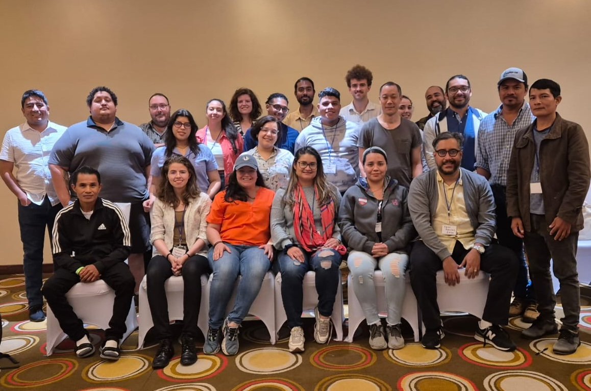
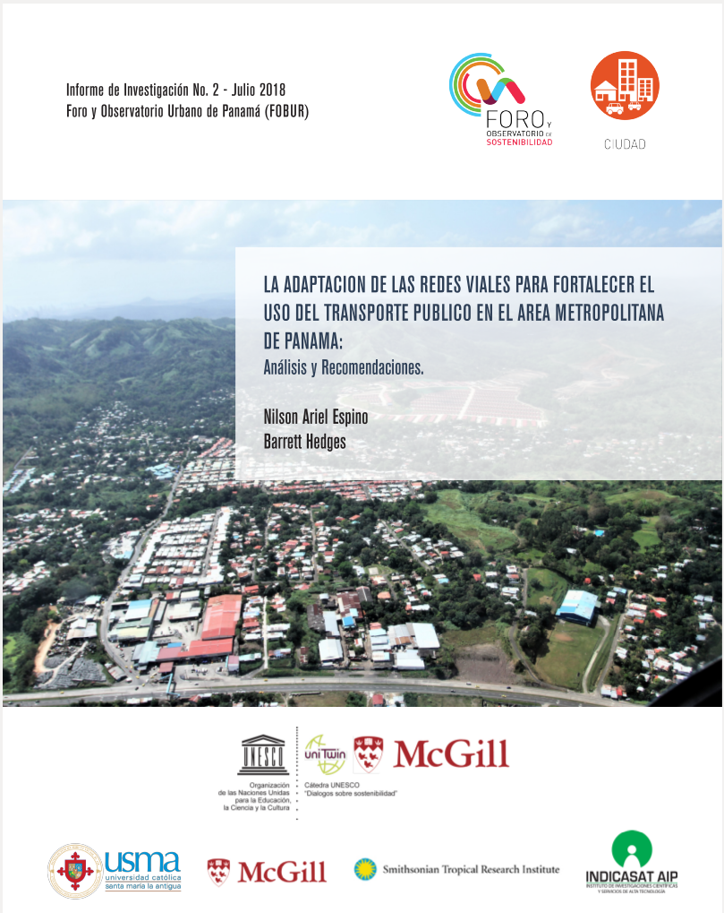

News and Outreach
See recent PRSIM news, outreach, and education events
PRISM Workshop: November 2024
On November 25th and 26th 2024, PRISM held its fifth workshop at the Summit Rainforest and Golf Resort in Panama City.
The topics covered were as follows:
- Developing a forest “regrowth potential” map for Panama
- Developing policy brief for Maje Watershed Land Use Plan (i.e. : Plan de Ordenamiento)
- Exploring potential drivers of mangrove forest changes in Panama
- Climate change and planetary health: a panamanian perspective
- Puerto Barú development evaluation
- Parita Bay management

Figure: 2024 PRISM workshop participants
PRISM Workshop: May 2022
The fourth PRISM workshop took place on the 30th of May 2022, in Ciudad del Saber, Panama City.
The list of topics covered in the workshop are as follows:
- Panama Canal, salinization, and biological invasions.
- Estimating nutrient inputs and mangrove dynamics
- Human health impacts of reforestation
- Marine trophic interactions and remote sensing
- Indigenous biocultural analysis and scientific biodiversity models
- Marine botanical layer and the potential for aquaculture
Urbanamá Festival de Urbanismo
URBANAMÁ is a festival envisioned for the exchange of experiences and knowledge on urbanism in Panamá, which took place on May 20th, 21st, and 22nd, 2022.
It is a space for highlighting and debating ideas, projects, and successes that can or have generated a more sustainable, inclusive, and livable city; for which PRISM was a sponsor.
Check out the festival report here!
PRISM Workshop: January 2020
The third PRISM workshop took place in January 2020 and brought together 29 participants
from a variety of backgrounds with a shared interest in sustainability and modeling.
After a series of updates on projects that were being carried out through the PRISM
small grants program, participants split into breakout groups based on broad themes that united
ongoing efforts such as mangrove conservation, reforestation, invasion biology, and nutrient cycling.
Future directions that would synthesize the groundwork being laid by current PRISM projects were discussed.
Here is an introductory talk on the SWAT hydrological model (Speaker: Brian Leung):
PRISM Internship
The first Biodiversity, Ecosystem Services, and Sustainability (BESS) intern working with PRISM is Chloé Debyser, who is developing a model of forest patch connectivity in Panama at the national and regional scales with Omar Lopez at INDICASAT and urban planner Ariel Espino respectively. More information on the connectivity project as well as our other projects can be found on the projects page.
BESS is an initiative with NSERC CREATE which seeks to provide training experiences for students of the environmental sciences. You can learn more about BESS here.
PRISM Workshop: April 2018
The second PRISM workshop was carried out as a full-day event on April 25th 2018 at the Tupper main campus of the Smithsonian Tropical Research Institute in Panama City.
The first half of the workshop was a series of ten short talks where PRISM collaborators presented their research interests in connection with the PRISM layers. These ten talks were split evenly between (1) existing components of PRISM and (2) identified connections for future exploration.
- Existing components (speaker name in parentheses):
- Biodiversity model (Brian Leung)
- Geophysical model (Shriram Varadarajan)
- Aquatic sampling: rivers (Andrew Sellers)
- Marine/aquatic sampling: general data (Steve Patton)
- Pre-identified connections (speaker name in parentheses):
- McGill Sustainability Systems Initiative (Andrew Gonzalez)
- Sustainability indicators (Anthony Sardain)
- Global shipping and Panama (Brian Leung)
- Biological connectivity (Chloé Debyser)
- Networks and social connectivity (Dipto Sarkar)
The second half was then focused on collaboratively identifying priorities for sustainability in Panama. where all attendees were invited to contribute up to three answers each to the prompt of 'What, in your opinion, is the biggest challenge to the development of sustainability in Panama?' All answers were then collated and processed in order to sort out the most common themes, which were as follows:
- Biodiversity model (Brian Leung)
- Geophysical model (Shriram Varadarajan)
- Aquatic sampling: rivers (Andrew Sellers)
- Marine/aquatic sampling: general data (Steve Patton)
Report

July 2018: "The adaptation of road networks to strengthen the use of public transport in the Panama metropolitan area", second report of the Forum and Urban Observatory of Panama. Research funded by SENACYT and conducted by Ariel Espino, general manager of SUMA arquitectos and previous PRISM co-chair, in collaboration with McGill University and University College London. PDF available in Spanish.